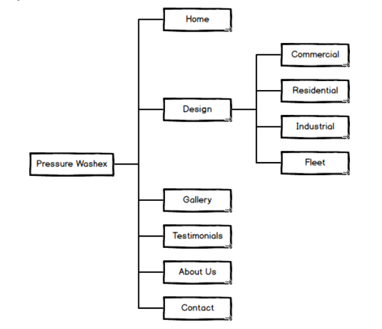
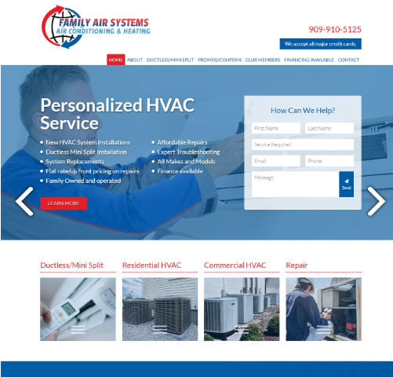
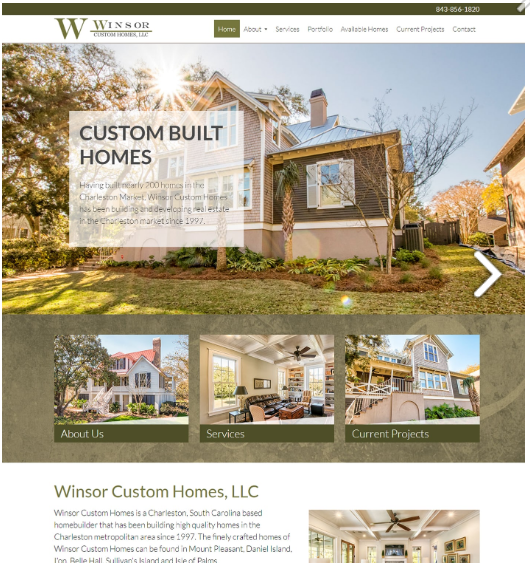
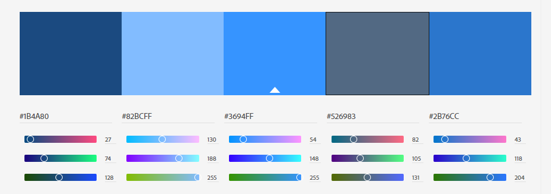

Providing Customer Interactivity to the Pressure WashEx Site
A Project by Allison Marshall and Jeff Willer
Client and Goals
For this project, our client will be Pressure WashEx business owner Robert Smith.
Currently, Pressure WashEx has a relatively basic web page that allows customers to briefly explore the wash services for the company, view a gallery, and click through to the social media profiles for the company. What this site lacks is a level of interactivity with the current and future customer base. The business owner would like to add interactivity to the web page so he can easily engage with his customer base. We intent to add this interactivity by creating a page where customers can leave comments, request information, and get a basic quote directly from the site.
Our site will use forms, comment sections, and an embedded twitter feed to provide an interactive format to the site. Customers will be able to request a quote for a specific type of wash based on the inputted criteria, comment and leave feedback about service and receive a response form the owner, and view the embedded twitter feed run by the company that is updated frequently. Combined, this site will allow Robert Smith to engage and interact with his customers easily through the web without always requiring the direct use of a social media page.
Audience
This site will be targeted towards two specific target audiences: potential customers and existing customers. The potential customers are targeted with a site to get information on the company, request a quote, view prior testimonials, and view the image gallery. The existing customers are targeted with a site to leave feedback and comments for the company and view major updates to the service line.

Persona: John Doe
John Doe is the owner of BigCo Trucking fleet, based out of Dekalb, Illinois. John Doe has not been satisfied with the last few pressure washing companies he has contracted to wash his fleet of 200 trucks. After this last long winter, John Doe would like to hire a new company to wash his fleet. John finds the testimonials and feedback from other business owners very important to making his own decision and likes to explore some past projects for the company before requesting a quote.
Road Map
- Features to Research
- Creating an interactive quote form and generating output based on submission, creating a comments section, embedding Twitter feed
- Timeline
- In process of generating a structure for all the features and dividing the research and coding between group members. A rough draft of project site will be completed by April 22, which will include the overall structure of the site and containers for the various interactive measures. These features will be tested in individual branches before being pushed to the core site. A branded version, which will include images, colors, etc. will be completed by April 26. This allows for additional adjustments to the content and further testing on the added features before the site goes live.
- Proposing Content Adjustments
- We will present the rough structure to the client after completion on April 22. The client will be able to make notes on the proposed structure at this point, but will not be able to recommend any changes that will push the project deadline. Minor adjustments to color scheme, images, and other branding can be done up until one week before go live.
This project is in the early planning phases. The team is currently working through the proposed features, branding, images, and overall request of the client to determine the full project schedule and begin to delegate the work.
Site Map
The Pressure WashEx page will comprise of the following main layout pages:
- Home
- Design, used for the "Services" subsections
- Gallery
- Testimonials
- About Us
- Contact
See the Site Map below for the full Web Page. The Subtrees for Services fall under the "Design" layout.
Site Design
Inspiration Page 1:
Created by Big Tuna Web Design
Inspiration Page 2:
Created by Big Tuna Web Design
Color Palette for Site
Balsamiq Wireframes
Project Rubric
No current adjustments have been made to the project rubric, but the team would request the ability to make future adjustments during the project depending on any additional features that are implemented.
| Elements | /Points | Comments |
|---|---|---|
| HTML + CSS -4 .html files -css is applied -includes home (index.html), design, and 2 additional pages |
/30 | |
| LAYOUT -Consistent nav on each page -Includes: header, body & footer |
/10 | |
| NAVIGATION -Easy and clear to use -Functional on all pages -Hover effect shows links |
/10 | |
| IMAGES -2+ per page (except home page may have 1) -Images load quickly and have good resolution (saved at the right size and proportion) |
/10 | |
| CONTENT -No grammatical or spelling errors -Appropriate -Sufficient information |
/10 | |
| DESIGN PRINCIPLES Color Combination Proximity Repetition Contrast Alignment Typography |
/20 | |
| CREATIVITY + PROBLEM SOLVING Went beyond the requirements to extend the learning experience |
/10 | |
| TOTAL | /100 |